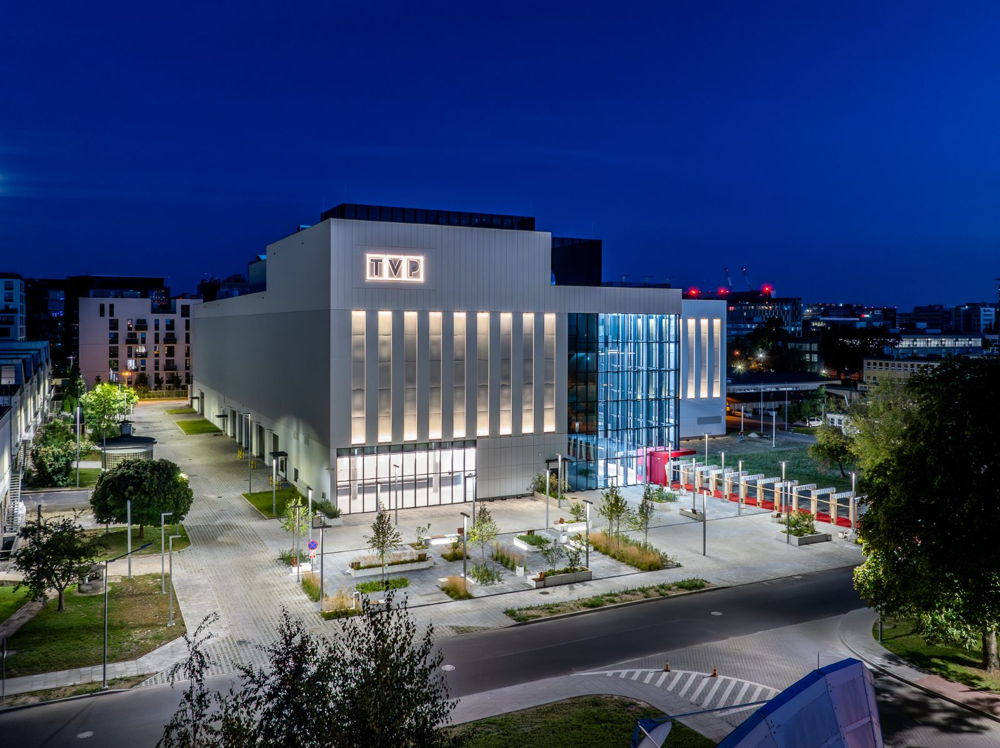
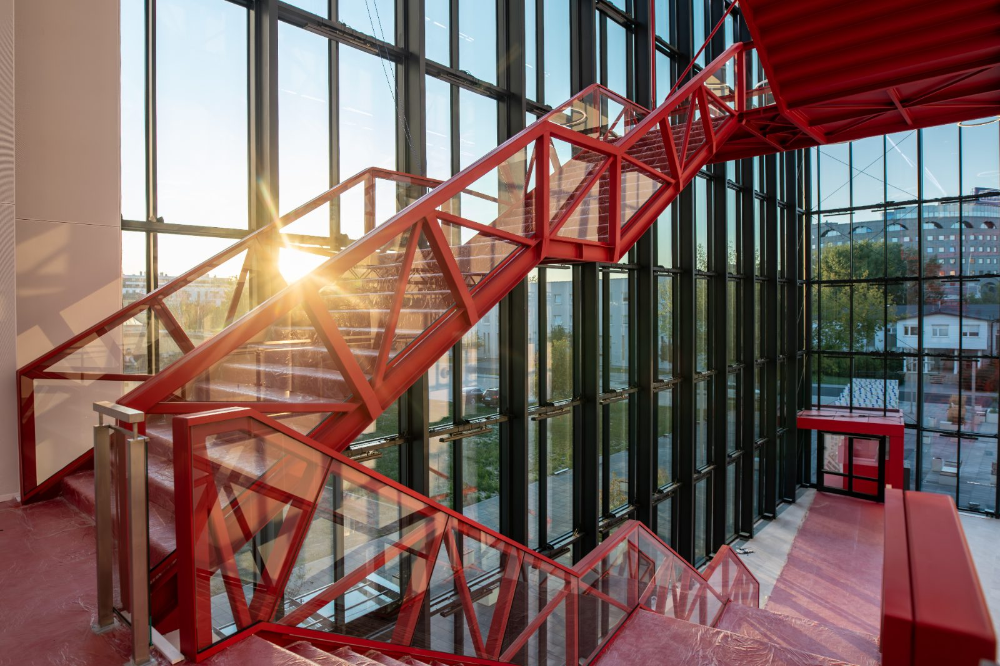
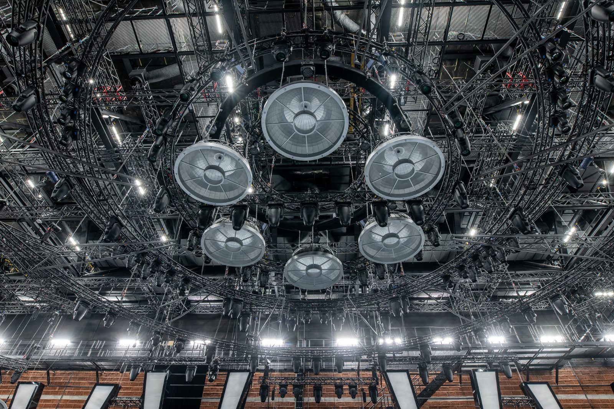
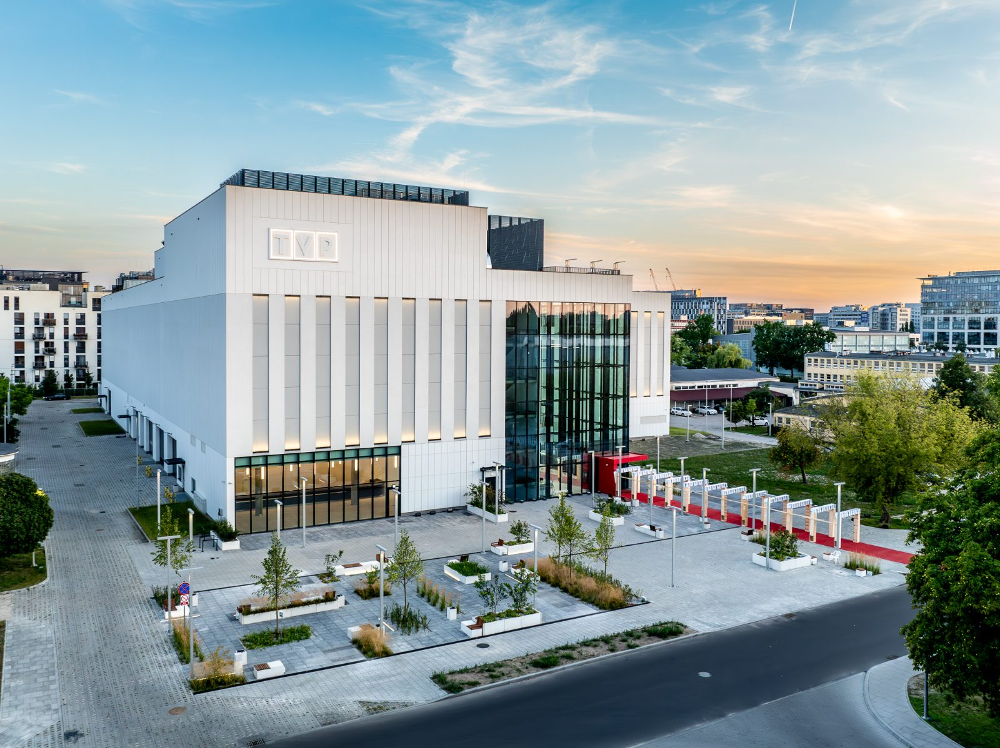
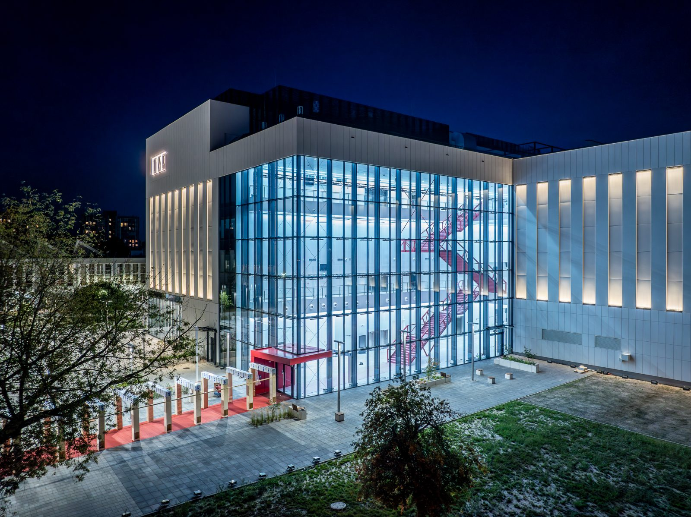

DORACO
× TVP.
Film i zdjęcia z drona dla DORACO – generalnego wykonawcy hali zdjęciowej Telewizji Polskiej. Dokumentacja inwestycji, która pokazuje skalę i precyzję budowy.
Budowa, którą
trzeba pokazać.
Hala zdjęciowa dla TVP to obiekt nietypowy: duża kubatura, wymagająca akustyka i technika studyjna. Dla DORACO to mocna referencja – pod warunkiem, że da się ją dobrze pokazać.
Zrealizowaliśmy film i serię zdjęć z drona oraz z ziemi. Materiał pokazuje obiekt w całości i w detalu, a DORACO wykorzystuje go w ofertach, na stronie i w social mediach.
Od planu
do montażu.
Plan zdjęć
Ujęcia zaplanowane pod konstrukcję i światło – tak, żeby oddać skalę obiektu i jego otoczenie.
Dron
Przeloty nad halą i ujęcia z góry, które pokazują bryłę budynku w całości.
Ujęcia z ziemi
Detale konstrukcji, wnętrze i praca ekipy na budowie.
Montaż i foto
Film prezentacyjny i wyselekcjonowane zdjęcia gotowe do ofert i publikacji.
Hala TVP
z bliska i z góry.
Film prezentacyjny inwestycji łączący ujęcia z drona z materiałem nagranym na budowie.

Skala obiektu
w jednym kadrze.




„Dobra referencja to taka, którą widać. Pokazaliśmy halę TVP tak, jak zasługuje na to ta inwestycja.”